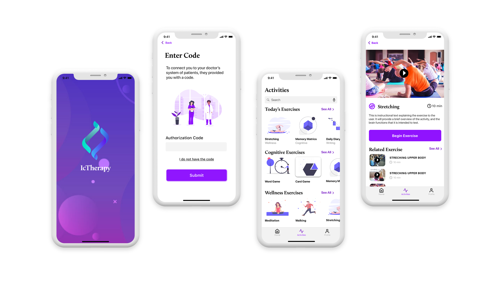
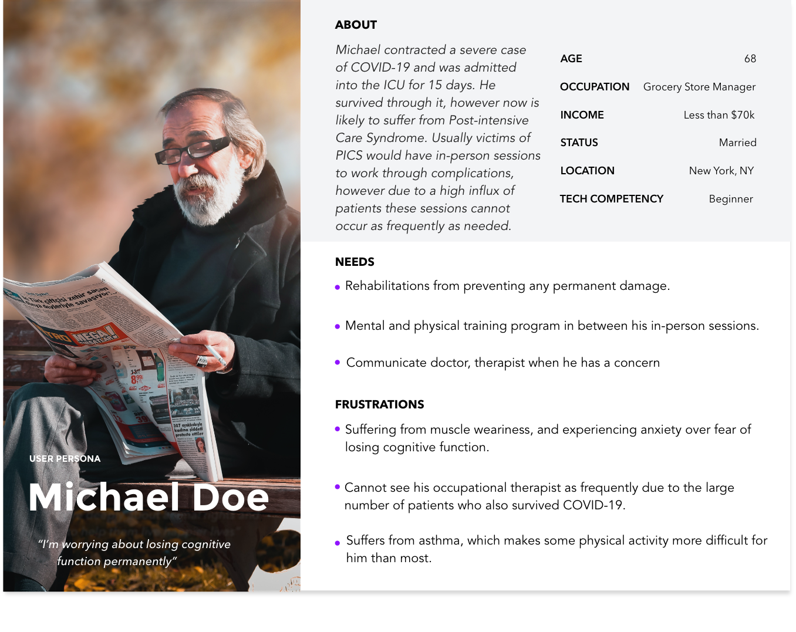
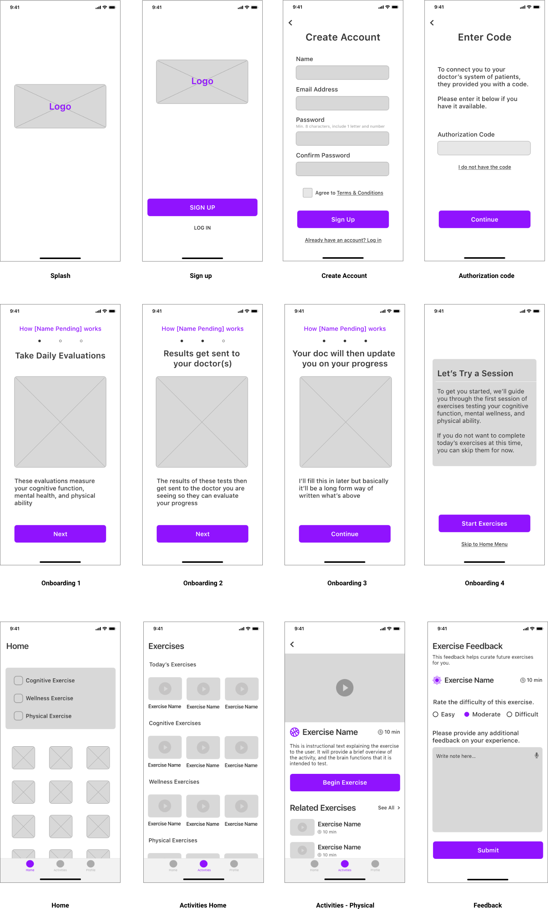
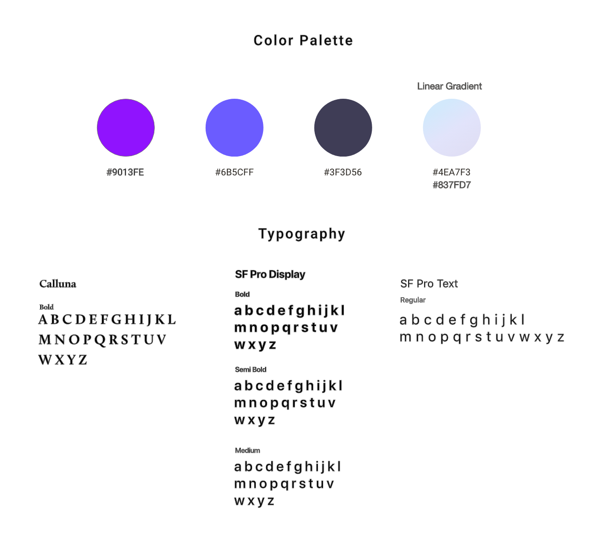
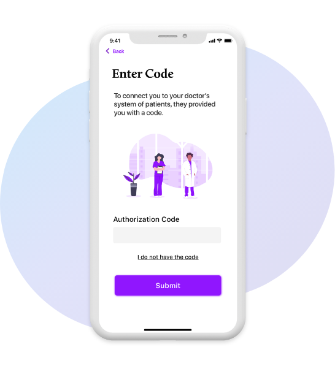
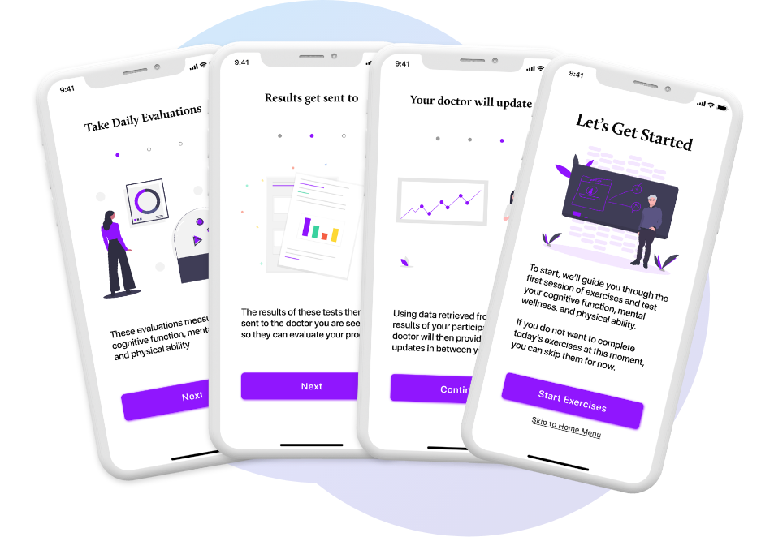
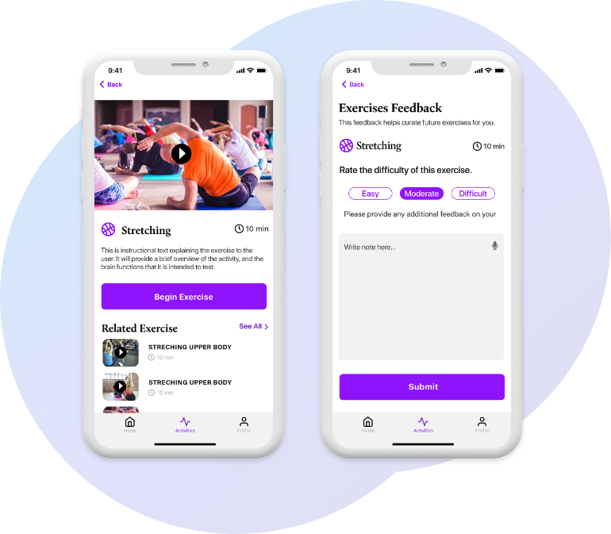
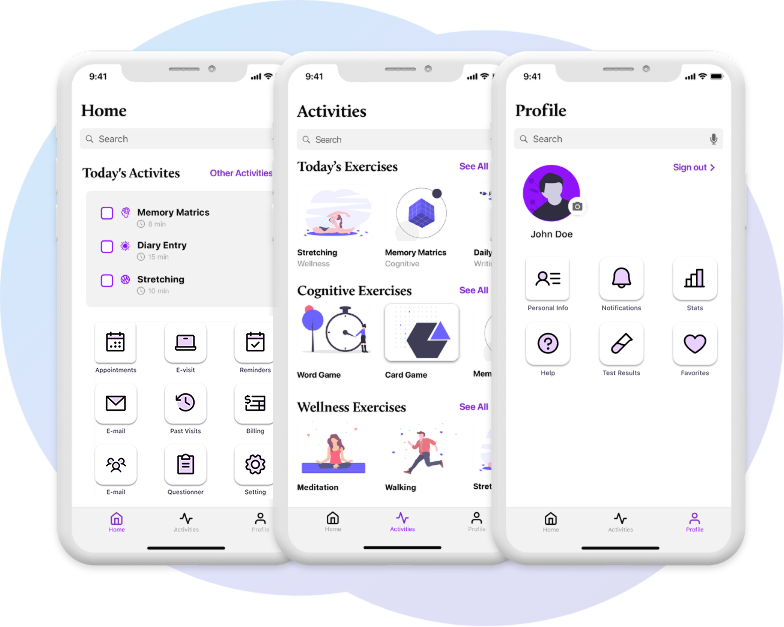
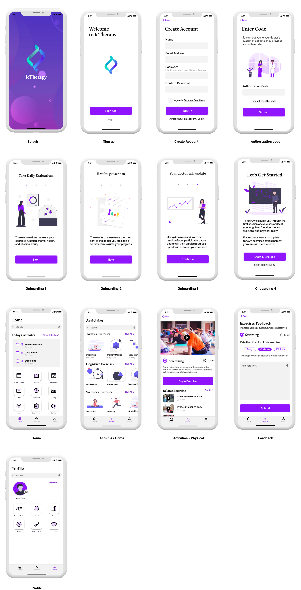

Assisting with the recovery process for Post Intensive Care Syndrome patients
from COVID-19
through the IcTherapy app.

This project was a 4 weeks design challenge for Remote Design Jam hosted by San Francisco User Experience Designers (UXD) group. The prompt was an COVID-19 related problem. Each team decided on a problem space and solved it with design. Our team decided to create a mobile app that assists the recovery process and prevent any consequential damage for Post Intensive Care Syndrome patients from COVID-19.
YEAR
2020, 4 weeks
ROLE
UX/UI
TEAM
3 Designers
TOOLS
Sketch
Many survivors of severe COVID-19 cases are likely to suffer from Post-intensive Care Syndrome
Occupational therapists and mental health professionals will be overwhelmed by the increase in patients as a result of the pandemic which will possibly cause less attention for individuals who are recovering.
SolutionCreate an app that curates daily exercises for the patient each day that evaluates their performance
The results are sent to the physician and that allows the physician to monitor the patient’s progress.
Severe COVID-19 survivors face significant cognitive loss and mental health struggles
According to a recent New York Times report of hospitalized COVID-19 patients...
Loss in cognitive function
up to 75% of ICU survivors
Mental health issues in the form of depression, anxiety, and PTSD
up to 62% of ICU survivors
We created a user persona to express and focus on the major needs and expectations of the user

Supporting Post-Intensive Care Syndrome recovery
Custom mental exercises and targeted content designed to aid individual recovery.
Designed to enhance and track progress between clinical appointments, not replace them.
Mapping the primary patient journey: From onboarding to daily exercises and feedback


These core features bridge the gap between at home recovery and clinical oversight
Authorization code provided by the doctor is required for first time signup. This code synchronizes between the doctor’s client management system and a client's app. This simple step enables the client's progress to be updated regularly for the doctor.


Onboarding screens will appear when a user signs up for the first time to demonstrate the benefits and value that the user will get. In addition, they are educating the user how to use this app.
The feedback screen will show up after each activity. The user will mark the difficulty of the activity and provide notes for the physician if they have any concerns. This feedback helps curate activity for individual patients, and thus will synchronize patient's records that doctor owns.


“Home”, “Activities” and “Profile” of the main navigation are located at the bottom of the screen and all the pages are able to accessed from there. Home is hub of all the pages, Activities is hub of activities and Profile is personal data. Daily activities are key to the recovery process so we decided Activities should be on the main navigation menu.
Blending a warm, welcoming aesthetic with the structured clarity expected of a clinical application

Initially, exploring a broad theme like COVID-19 felt overwhelming. Once we narrowed our focus to Post-Intensive Care Syndrome (PICS), we were able to significantly accelerate our research and ideation because we had a clear, well-defined problem to solve.
Operating on a strict four week timeline required structured organization. By establishing weekly milestones right at the project kickoff, we stayed aligned and productive. Ultimately, we delivered a complete design and successfully presented it to our audience.